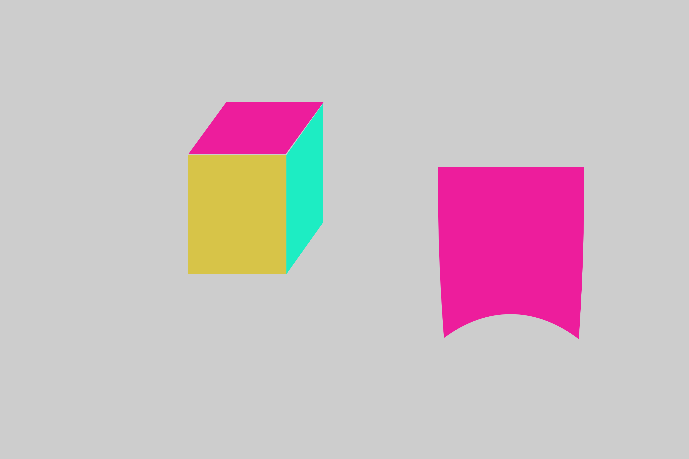

云顶作坊PS公开课概念篇
一.第一部分概念
1. 图层作用,承载信息 混合模式 正片叠底
2.蒙版作用 蒙住信息 黑笔隐藏 白笔显示
3.羽化,柔软程度 硬度相反
4.RGB,光的三原色
5.选区 抠图 复制选区为新图层
二.第二部分概念
1.色阶 用直方图描述出整张图片的明暗信息,从左到右从暗到亮的像素分布
调整明暗动态范围 查看修正曝光 调色 提高对比度
C-gradation
灰色中间调的图,调节最暗和最亮,可以提高对比度,使图像更通透
图像-调整-色阶 一般不用 要用右下角的调整图层
色阶调节重新定义0和255
2.混合模式 像素如何混合 除背景都有
正片叠底 常见相加 柔光 渲染 滤色 日光
3.曲线 横轴色阶输入 竖轴明度值输出 默认是输出等于输入 对角线
最常用的S形曲线 对比质感更强,加强亮部 减小暗部
4.路径 特殊的辅助线 辅助抠图
钢笔 形成选区
5.通道 把图像分解成多个色彩成分 灰度只有一个通道 单个通道是灰度 掌握各个通道原色的亮度变化
纯红色用白色表示 没有红色用黑色表示
三.第三部分概念
1.矢量图 对每个对象都是用函数表示的 与分辨率无关 放大不会减画质
2.位图 最小的单位是像素 放大会造成马赛克
3.智能对象 矢量图 无损处理 默认是智能对象
4.栅格化 转化为位图
四.第四部分概念
1.液化 人像处理 瘦脸瘦腿 放大眼睛 智能人脸识别
滤镜 液化 CMD+SHIFT+X
向前变形 调节画笔 可以瘦脸 调形状
膨胀工具 放大 眼睛
2.自由变换 CMD+T
等比例 MAC自动就是等比例 不用按Shfit 有个按钮可以调节
Option 中心缩放
CMD 拖拽 锚点 变形
右键 变形 覆盖曲面的书
材质填充
